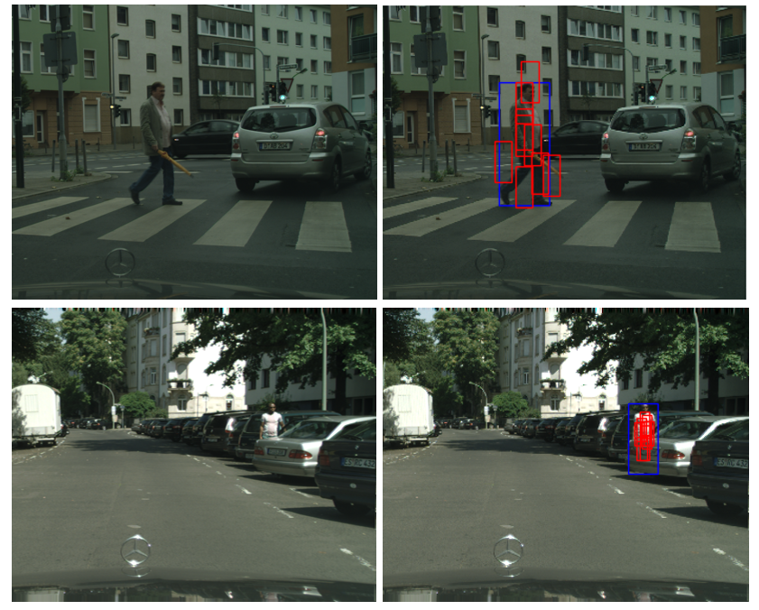
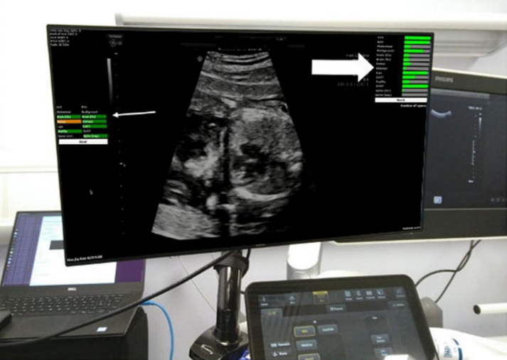
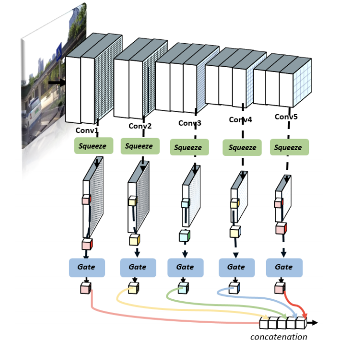
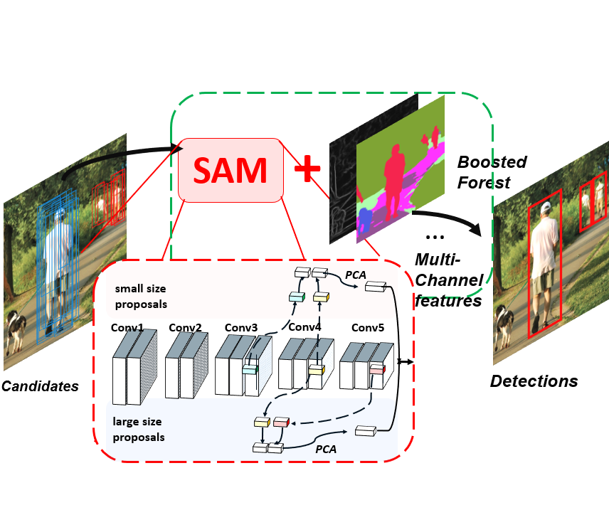
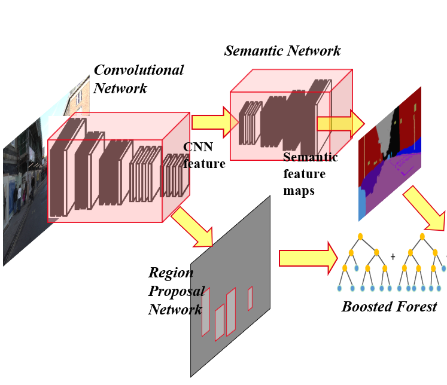
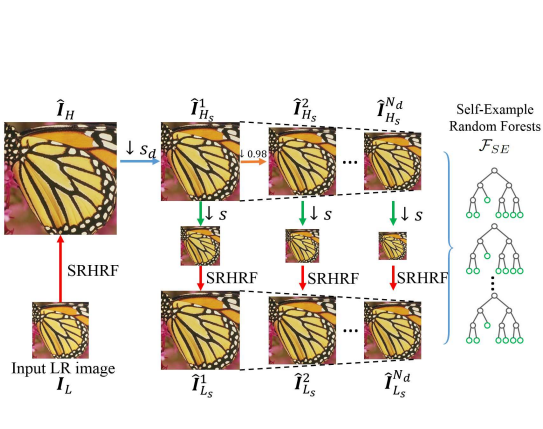
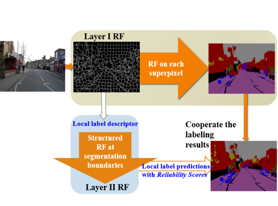
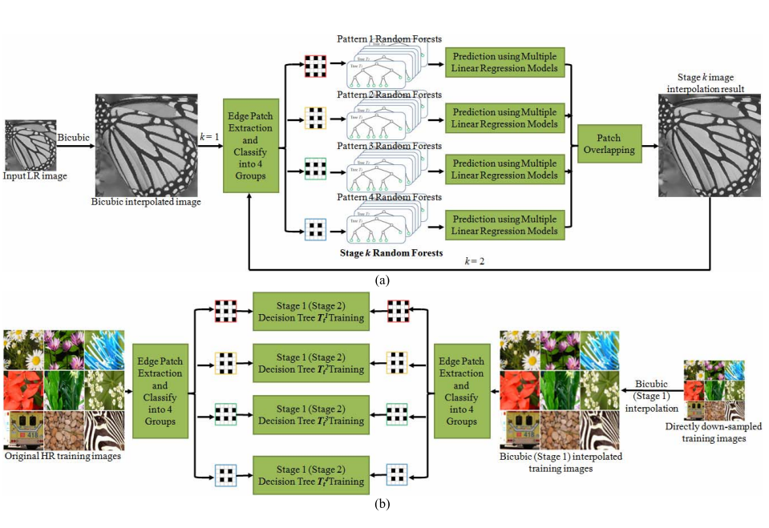

|
Tianrui Liu
I am now a Lecturer at the Department of Computer Science, National University of Defense Technology (NUDT).
Before, I was a Postdoc Resesarcher in the BioMedIA Group in Imperial College London, advised by Professor Daniel Rueckert and Dr. Bernhard Kainz.
I'm interested in computer vision, deep learning, object detection and pattern recognition, image and video processing and medical image analysis.
In my spare time, I like playing piano, reading and playing badminton.
Email /
CV /
Google Scholar /
LinkedIn
|
|
|
Education
-
Ph.D in Computer Vision and Image Processing, Imperial College London
Nov. 2015 - Nov. 2019
-
M.Phil. in Image and Video Processing, University of Hong Kong
Sep. 2013 - Nov. 2015
-
B.Eng. (First Class Honours) in EIE, Hong Kong Polytechnic University
Sep. 2011 - Jun. 2013
-
B.Eng. in Microelectronics, San Yat-Sen University
Sep. 2009 - Jun. 2011
|
|
Working Experience / Activities
-
Resesarch Associate @ Imperial College London.
Aug. 2019 - Aug. 2021
-
Research Intern @ Tencent AI Lab (Shenzhen, China), advised by Dr. Wenhan Luo Mar. 2020 - Now
-
Aug. 2018
-
Research Intern @ RISA Sicherheitsanalysen GmbH (Berlin, Germany)
June. 2018 - Sep. 2018
-
Visiting Research Scholar @ Hong Kong Polytechnic University, advised by Prof. Wan-Chi SiuJun. 2016 - Aug. 2016
|
For a complete list, please check my Google Scholar.
|

|
Coupled-Network for Robust Pedestrian Detection with Gated Multi-Layer Feature Extraction and Deformable Occlusion Handling
Tianrui Liu,
Wenhan Luo,
Lin Ma,
Junjie Huang,
Tania Stathaki,
Tianhong Dai,
IEEE Transactions on Image Processing, 2020
pdf /
bibtex
In this paper, we propose a gated multi-layer convolutional feature extraction method which can adaptively generate discriminative features for candidate pedestrian regions.
|
|
|
Ultrasound Video Summarization using Deep Reinforcement Learning
Tianrui Liu,
Qingjie Meng,
Athanasios Vlontzos,
Jeremy Tan,
Daniel Rueckert,
Bernhard Kainz
International Conference on Medical Image Computing and Computer Assisted Intervention (MICCAI), 2020
pdf /
bibtex
We propose an ultrasound video summarization method to summarize the long examination videos. The proposed method can remove parts that are not relevant for diagnostics and meanwhile guarantees the preservation of decisive diagnostic information.
|
|

|
Exploring a new paradigm for the fetal anomaly ultrasound scan: Artificial intelligence in real time
Jacqueline Matthew,
Emily Skelton,
Thomas G. Day,
Veronika A. Zimmer,
Alberto Gomez,
Gavin Wheeler,
Nicolas Toussaint,
Tianrui Liu,
Samuel Budd,
Karen Lloyd,
Robert Wright,
Shujie Deng,
Nooshin Ghavami,
Matthew Sinclair,
Qingjie Meng,
Bernhard Kainz,
Julia A. Schnabel,
Daniel Rueckert,
Reza Razavi,
John Simpson,
Jo Hajnal
Prenatal Diagnosis, 2021
pdf /
bibtex
We piloted the end-to-end automation of the mid-trimester screening ultrasound scan using AI enabled tools. Survey responses suggest that the AI toolshelped sonographers to concentrate on image interpretation by removing disruptivetasks.
|
|

|
Gated Multi-layer Convolutional Feature Extraction Network for Robust Pedestrian Detection
Tianrui Liu,
Jun-Jie Huang,
Tianhong Dai,
Guangyu Ren,
Tania Stathaki
International Conference on Acoustics, Speech, and Signal Processing (ICASSP), 2020
pdf /
bibtex
In this paper, we propose a gated multi-layer convolutional feature extraction method which can adaptively generate discriminative features for candidate pedestrian regions.
|
|

|
SAM-RCNN: Scale-Aware Multi-Resolution Multi-Channel Pedestrian Detection
Tianrui Liu,
Mohamed ElMikaty,
Tania Stathaki
British Machine Vision Conference (BMVC), 2019
pdf /
bibtex
We exploits different combination of multi-resolution CNN features for pedestrian candidates of different scales.
|
|

|
Faster R-CNN for robust pedestrian detection using semantic segmentation network
Tianrui Liu,
Tania Stathaki
Frontiers in Neurorobotics, 2018
pdf /
bibtex
Our method extends the Faster R-CNN detection framework by adding a branch of network for semantic image segmentation.
|
|

|
SRHRF+: Self-Example Enhanced Single Image Super-Resolution Using Hierarchical Random Forests
Jun-jie Huang,
Tianrui Liu,
Pier Luigi Dragotti,
Tania Stathaki,
IEEE Conference on Computer Vision and Pattern Recognition (CVPR) Workshop, 2017
pdf /
bibtex
A novel hierarchical random forests based super-resolution (SRHRF) method is proposed to learn statistical priors from external training images.
|
|

|
Hierarchical Semantic Image Labelling method via Random Forests
Tianrui Liu,
Shing Chow Chan
IEEE Region 10 Conference TENCON (Young Scientist Award), 2015.
pdf /
bibtex
We propose an effective image labeling method with a hierarchical framework consists of two layers of random forests (RF). In the first layer, RF is performed on superpixel basis. In the second layer, structured RF is applied to make use of the topological distribution of the object classes.
|
|

|
Fast Image Interpolation via Random Forests
Jun-jie Huang,
Wan-Chi Siu,
Tianrui Liu
IEEE Transactions on Image Processing, 2015.
pdf /
bibtex
We propose a two-stage framework for fast image interpolation via random forests. The underlying idea of this proposed work is to apply random forests to classify the natural image patch space into numerous subspaces and learn a linear regression model for each subspace to map the low-resolution image patch to high-resolution image patch.
|
|
Selected Awards
-
Chinese Government Award for Outstanding (Non-Government Sponsored) Students Abroad ($6,000)
2020
-
Imperial College Department Scholarship (£130,000), Imperial College London
2016 - 2019
-
Young Scientist Award, IEEE Region 10 Conference TENCON
2015
-
Dean's List of Outstanding Students, HKPolyU
2012 & 2013
-
Outstanding Performance Scholarship (HK$ 80,000), HKSAR Government
2012
-
PolyU EIE (Non-local Student) Scholarship (HK$ 100,000), HKPolyU
2011
|
|
Professional Activities
Journal Reviewer:
-
IEEE Transactions on Image Processing (TIP)
-
IEEE Transactions on Neural Networks and Learning Systems (TNNLS)
-
IEEE Transactions on Medical Imaging (TMI)
-
Transactions on Geoscience and Remote Sensing (TGRS)
-
IEEE Transactions on Multimedia (TMM)
-
IEEE Internet of Things Journal (IoT)
-
Future Generation Computer Systems
-
Pattern Recognation, etc.
|
|
Talks
-
Deep learning in Pedestrian Detection and Video Analysis
@Huazhong University of Science and Technology, WuHan, China
Dec. 2020
-
Deep Learning for Pedestrian Detection and Medical Video Summarization
@Nanjing University of Aeronautics and Astronautics, NanJing, China
Sep. 2020
-
What Can Help Pedestrian Detection?
@National University of Defense Technology, ChangSha, China
Dec. 2019
-
Deep Learning for Pedestrian Detection under Complex Environment
@NorthEast University，Department of Computer Science, ShenYang, China
Dec. 2019
-
Enhanced Pedestrian Detection using Deep Learning based Semantic Segmentation and Scale-Aware Scheme
@National Technical University of Athens, Athens, Greece
Sept. 2018
-
Low Resolution Face Detection for Video Surveillance Technologies
@Artificial Intelligence and Mulitmedia Lab, HK PolyU, HK
Sept. 2018
|
The original template of this page can be found from here.
|
|
{kind=link}